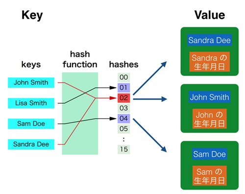

辞書型(マップ)
本記事の内容
概要
辞書型は「キー」と「バリュー」を複数持つデータ構造の型です。 辞書型のインスタンスに対してキーとバリューのペアを登録すれば、 キーを指定してバリューを取得することができるようになります。
このキーとバリューの関係はリストにおけるインデックス番号と要素の関係に近いです。 同じインデックス番号で複数の要素を持てないのと同じように、 キー値は重複することができません。 すでに存在するキーと同じ「キーとバリューのペア」を登録すると、バリューが新しい値で更新されます。
辞書型はセット型と同じようにハッシュという仕組みを使っているため、動作が高速です。
辞書型の特徴
辞書型はセットを拡張したデータ型で、セットの要素にあたる「キー」が「バリュー」という値を持っている構造です。 仕組みとしてはセットに似ていますが、その使い方はセットというよりもリストに似ていて、 辞書型のインスタンスが持つバリューを、キーを指定して取得するというものです。 インデックス番号を指定して要素を取得する代わりに、キーを指定してバリューを取得します。
たとえば、果物をキーとして、その色をバリューとした辞書型のインスタンスを作るとします。 そのインスタンスには以下のようなキーとバリューの組合せが存在します。 もちろんこれより多くの組合せを登録できます。
| キー | バリュー | |:-------------:|:---:| | りんご | 赤 | | レモン | 黄 | | ぶどう | 紫 | | さくらんぼ | 赤 |
辞書型のインスタンスに対して「キーであるりんごに対応するバリューを返せ」とすると、赤が返されます。 同様にレモンを指定すれば黄が返されます。
キーはセットと同様に重複が許されないため、「りんご:赤」のペアと「りんご:緑」のペアは共存できません。 ただ、バリューは重複していてもかまわないため、「りんご:赤」と「さくらんぼ:赤」は同時に存在できます。
辞書型の基本操作
初期化
辞書型のインスタンスを作成するにはdict関数を呼び出します。 こうすると、空のインスタンスが作成されます。
>>> a = dict() >>> print(type(a)) <class 'dict'>
ただ、dict関数よりも中括弧「{}」を使った初期化のほうがよく利用されます。 中括弧を使った初期化では、カッコのなかに「キー:バリュー」というコロンで結ばれたペアが、 コンマで必要なだけ繰り返されます。
>>> a = {'apple':'red', 'lemon':'yellow'}
>>> print(type(a))
<class 'dict'>
こうすると、「キー'apple'とバリュー'red'」のペアと、 「キー'lemon'とバリュー'yellow'」のペアが作成されます。
| キー | バリュー | |:-------------:|:---:| | 'apple' | 'red' | | 'lemon' | 'yellow' |
キー及びバリューの型はなんでも構いませんが、キーには文字列型を使うことが多いです。 バリューは数値や文字列だけでなく様々な型を状況に応じて使い分けます。 自作のクラスのインスタンスをバリューとすることもあります。
空のインスタンスを中括弧で作ることもできます。
>>> a = {}
>>> print(type(a))
<class 'dict'>
中括弧でインスタンスを作るというのはセットと辞書型で同じです。 そのため、中身をどのように書くかでPythonはそれがセットか辞書型かを判別しています。 空だとどちらか特定できないので、辞書型にするという決まりになっています。
辞書型の中身の確認
print関数に辞書型のインスタンスを与えることで、 辞書型にどのようなキーとペアの組合せがあるか確認できます。
>>> a = {'apple':'red', 'lemon':'yellow'}
>>> print(a)
{'apple': 'red', 'lemon': 'yellow'}
セット型と同じく辞書型のペアにも順序はありません。 そのため、printの出力で表示された組合せの並びでペアが存在していると思わないでください。
キーを指定したバリューの取得
辞書型のインスタンスにたいして大カッコでキーを指定すると、 そのキーのペアとなるバリューを得ることができます。
>>> a = {'apple':'red', 'lemon':'yellow'}
>>> b = a['apple']
>>> print(b)
red
>>> print(a['lemon'])
yellow
この辞書型でのキーを指定してバリューを得る手法は、 リストでインデックス番号を指定して要素を得るのと似ています。 そのため辞書型に相当する仕組みを提供するいくつかの言語では、これを「 連想配列 」と呼んでいます。
なお、存在しないキーを参照しようとするとエラーとなります。 これもリストのインデックス範囲外へのアクセスと似ています。
>>> a = {'apple':'red', 'lemon':'yellow'}
>>> b = a['banana']
Traceback (most recent call last):
File "<stdin>", line 1, in <module>
KeyError: 'banana'
キーとバリューの更新
リストでインデックスの要素を更新するには、インデックス番号を指定して要素を代入していました。 辞書型でのバリューの更新もほとんどこれとほとんど同じで、 辞書型のインスタンスに対してキーでバリューを指定して代入をします。
>>> a = {'apple':'red', 'lemon':'yellow'}
>>> a['apple'] = 'green'
>>> print(a['apple'])
green
変更前は以下のような辞書型のペアを持っていました。
| キー | バリュー | |:-------------:|:---:| | 'apple' | 'red' | | 'lemon' | 'yellow' |
キー'apple'のバリューを更新すると、以下のようになりました。
| キー | バリュー | |:-------------:|:---:| | 'apple' | 'green' | | 'lemon' | 'yellow' |
キーとバリューの追加
リストにappendメソッドやinsertメソッドで要素を追加できるように、 辞書型でもキーとバリューのペアを追加できます。 ただ、辞書型ではメソッドでの追加よりも更新と同じ記法を使ったペアの追加が一般的です。
更新をするように新しいキーにたいしてバリューを代入すると、キーとバリューのペアが追加されます。
>>> a = {'apple':'red', 'lemon':'yellow'}
>>> a['grape'] = 'purple'
>>> print(a['grape'])
purple
>>> print(a)
{'apple': 'red', 'lemon': 'yellow', 'grape': 'purple'}
キーの存在確認
辞書型のインスタンスのなかに指定したキーがあるかを確認するにはin演算子を使います。 「キー in 辞書型のインスタンス」とすれば、キーがインスタンスに存在すればTrueが返され、 存在していなければFalseが返されます。
>>> a = {'apple':'red', 'lemon':'yellow'}
>>> print('apple' in a)
True
>>> print('banana' in a)
False
存在するキー'apple'を指定した場合はTrueを得ており、 存在しないキー'banana'ではFalseとなっています。
大カッコを使ってキーのバリューを取得するコードにおいて、 存在しないキーを指定する可能性がある場合はif文と組み合わせてエラーにならないようにしてください。
この仕組を使ったよくみかけるコードとしては「キーがあればバリューを取得し、 なければ新しくキーとバリュー(デフォルト値)を追加する」というものがあります。 このようなシナリオではin演算子でキーの有無を調べ、その結果に応じて条件分岐をさせます。
サンプルプログラムとしてテキスト内にあるアルファベットの数を数えるプログラムを記載します。 テキストを1文字ごとにループし、すでに存在した文字(in演算がTrue)であればカウントを1増やし、 新しい文字(in演算がFalse)であれば新しくキーとバリューを登録という流れです。
text = 'hello world' d = {} for c in text: if c in d: count = d[c] d[c] = count + 1 else: d[c] = 1 print(d)
このプログラムの出力は以下のようになります。 アルファベットごとの出現数をカウントできています。
{'h': 1, 'e': 1, 'l': 3, 'o': 2, ' ': 1, 'w': 1, 'r': 1, 'd': 1}
for 文の利用
辞書型のインスタンスにたいしてfor文を使うと、インスガンスが持つキーを使ってループを回すことができます。 セットのループと同じく、順序は保証されないためランダムだと考えてください。
a = {'apple':'red', 'lemon':'yellow'} for key in a: value = a[key] print('key:{}, value:{}'.format(key, value))
key:apple, value:red key:lemon, value:yellow
辞書型のメソッドであるkeys、values、itemsを使ってもforループを回すことができます。 keysの返り値でループを回すと、インスタンスで直接ループを回したのと同じ結果になります。 ただ、valuesだとキーを使わずにバリューだけでループを回すことができ、 itemsを使えばキーとバリューをペアで取得してループを回すことができます。
辞書型のメソッド
keys : キーの一覧を取得
キーの一覧を取得するのであれば、辞書型のインスタンスに対してkeysメソッドを呼び出します。 返り値にキーの一覧をdict_keysという型で返します。
>>> a = {'apple':'red', 'lemon':'yellow', 'cherry':'red'}
>>> b = a.keys()
>>> print(b)
dict_keys(['apple', 'lemon', 'cherry'])
キーの一覧でループをするのであればこのままでも使えますが、 リストとして使いたいのであればキャストをしてください。
values : バリューの一覧を取得
バリューの一覧を取得するにはvaluesメソッドを呼び出します。 このメソッドの返り値はdict_valuesという型で、dict_keysと大差はありません。
>>> a = {'apple':'red', 'lemon':'yellow', 'cherry':'red'}
>>> b = a.values()
>>> print(b)
dict_values(['red', 'yellow', 'red'])
この型もループに使うこともでき、キャストでリスト型にもできます。
items : キーとバリューのペアの一覧を取得
キーだけ、バリューだけの一覧ではなく、ペアの一覧を得たい場合はitemsメソッドを使います。 このメソッドを呼び出すとdict_itemsというリストに似た型を返して、 そのなかにはタプルでまとめられたキーとバリューのペアが要素として存在します。
>>> a = {'apple':'red', 'lemon':'yellow'}
>>> b = a.items()
>>> print(b)
dict_items([('apple', 'red'), ('lemon', 'yellow')])
辞書型のキーでforループを回して、キーとバリュー(参照で取得)のペアを使うコードを書くのであれば、 このitemsメソッドを使うほうが綺麗になります。
a = {'apple':'red', 'lemon':'yellow'} for (key, value) in a.items(): print('key:{}, value:{}'.format(key, value))
key:apple, value:red key:lemon, value:yellow
pop : キーを指定したバリューの取り出し
辞書型のバリューを参照したあとで、そのキーとペアのバリューがいらなくなる(消したい)場合は、 popメソッドを使うと便利です。
popメソッドの引数にキーを指定すると、そのバリューを返り値として返して、 キーとバリューのペアをインスタンスから削除します。 これはリストのpopメソッドでインデックス番号を指定した際の挙動と似ています。
>>> a = {'apple':'red', 'lemon':'yellow'}
>>> b = a.pop('apple')
>>> print(b)
red
>>> print(a)
{'lemon': 'yellow'}
存在しないキーでpopメソッドを呼び出してもエラーとなります。
リストのpopメソッドと異なり、辞書型のpopメソッドでは引数でキーを指定することが必要です。 指定しないとエラーとなります。
>>> a = {'apple':'red', 'lemon':'yellow'}
>>> b = a.pop()
Traceback (most recent call last):
File "<stdin>", line 1, in <module>
TypeError: pop expected at least 1 arguments, got 0
get : デフォルト値を指定してバリューを取得
中括弧を利用したバリューの参照ではキーが存在しないとエラーとなります。
>>> a = {'apple':'red', 'lemon':'yellow'}
>>> b = a['banana']
Traceback (most recent call last):
File "<stdin>", line 1, in <module>
KeyError: 'banana'
キーが存在しない場合にデフォルト値を返したいという場合は、 getメソッドを引数付きで使うのが便利です。
このメソッドでは第一引数にキーを指定し、第二引数にデフォルト値を指定します。 バリューを取得する際は「キーが存在すればバリューを返す」という動きをします。
>>> a = {'apple':'red', 'lemon':'yellow'}
>>> b = a.get('apple', 'green')
>>> print(b)
red
ただ、キーが存在しない場合もエラーとはならず、 「キーが存在しない場合はデフォルト値を返す」という動作をします。
>>> a = {'apple':'red', 'lemon':'yellow'}
>>> b = a.get('banana', 'green')
>>> print(b)
green
>>> print(a)
{'apple': 'red', 'lemon': 'yellow'}
もともと存在する辞書型のインスタンスに変化はありません。
なお、getメソッドの第二引数を省略した場合は「None」をデフォルト値とします。
setdefault : 存在しない場合はデフォルト値のペアを作ってバリューを取得
setdefaultメソッドはほとんどgetメソッドと同一です。 バリューを取得する際は「キーが存在すればバリューを返す」 「キーが存在しない場合はデフォルト値を返す」という動きをします。
ただ、存在しないキーのバリューを取得した場合は、 getメソッドでは「辞書型のインスタンスに変化なし」という動きなのにたいし、 setdefaultメソッドでは「辞書型のインスタンスにキーとバリューのペアを追加」という動きをします。
setdefaultメソッドで存在するキーを指定した場合は、インスタンスはもとのままです。
>>> a = {'apple':'red', 'lemon':'yellow'}
>>> b = a.setdefault('apple', 'green')
>>> print(b)
red
>>> print(a)
{'apple': 'red', 'lemon': 'yellow'}
一方、存在しないキーを指定した場合は、 インスタンスにキーとバリュー(デフォルト値)のペアが追加されていることがわかります。
>>> a = {'apple':'red', 'lemon':'yellow'}
>>> b = a.setdefault('banana', 'green')
>>> print(b)
green
>>> print(a)
{'apple': 'red', 'lemon': 'yellow', 'banana': 'green'}
辞書型の仕組み
勘のいいかたであれば辞書型のしくみの想像がついたかもしれませんが、 簡単にいってしまうと、セットにおけるハッシュの使い方に「Valueも追加」しているだけです。

「John Smith」をキーとして指定するとハッシュ関数で「02」が得られ、 「02」のなかから「John Smith」のValueを取得してきます。